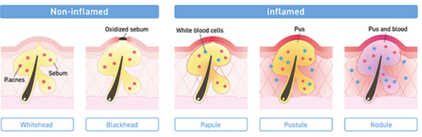

1. Chemical Peels for Acne
Superficial chemical peels serve as a valuable adjunct to standard topical and oral acne regimens for comedonal acne (blackheads and whiteheads) and selected mild-to-moderate inflammatory acne.
- Salicylic Acid (BHA): Lipophilic properties allow penetration into sebum-filled pilosebaceous follicles to dissolve comedones and reduce inflammation.
- Glycolic & Mandelic Acid (AHAs): Normalize follicular keratinization and reduce corneocyte cohesion.
- Limitations: Peels alone cannot control severe, deep, or nodulocystic acne, which requires systemic medical management.